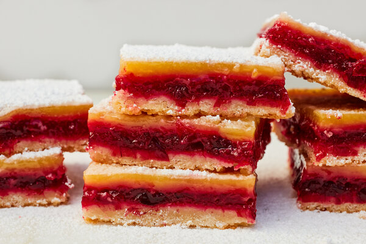

Cranberry Lemon Bars

Description
Cranberries that are quick-cooked into jam add a striking magenta color and complex tartness to these two-toned lemon bars. A thin layer of the classic lemon filling coats the cranberry mix like icing, and lemon zest boiled with the berries echoes the citrus taste of the lemony top. (Its pectin also thickens the jam.) To achieve a sturdy crust that isn’t tough, melted butter is stirred into a flour blend and simply patted into the pan. That vanilla cookie base, generously salted to balance the tangy sweetness on top, comes out crisp and holds up well even as the bars keep in the refrigerator for up to five days.
Ingredients
For the cranberry layer:
- 1 (12-ounce/340-gram) bag fresh or frozen cranberries
- ¾ cup/150 grams granulated sugar
- 2 to 3 large lemons
For the crust:
- Nonstick cooking spray
- 1 ½ cups/190 grams all-purpose flour
- ⅓ cup/65 grams granulated sugar
- 1 teaspoon fine sea salt
- 1 teaspoon vanilla extract
- ¾ cup/170 grams unsalted butter (1 1/2 sticks), melted and cooled
For the lemon layer:
- 1 cup/200 grams granulated sugar
- ¼ cup/30 grams all-purpose flour
- ⅛ teaspoon fine sea salt
- 3 large eggs, at room temperature
- Confectioner's sugar (optional)
Steps
- Start preparing the cranberry layer: Combine the cranberries, sugar and 3 tablespoons water in a medium saucepan. Zest 2 of the lemons directly into the saucepan; reserve the lemons. Bring to a boil over medium-high heat, stirring occasionally. Continue boiling, stirring occasionally, until the berries burst and the mixture is jammy, 7 to 9 minutes. Remove from the heat and reserve.
- Make the crust: Heat oven to 350 degrees. Line the bottom and sides of a 9-by-13-inch baking pan with one large sheet of heavy aluminum foil, making sure there are no gaps or holes, then generously coat with cooking spray.
- Whisk the flour, sugar and salt in a medium bowl. Whisk the vanilla into the butter, then pour over the flour mixture. Stir until the dough comes together in a mass. Press into an even layer in the prepared pan. Bake until golden brown around the edges and dry and golden on top, 17 to 20 minutes.
- While the crust bakes, begin preparing the lemon layer: Squeeze the juice from the 2 reserved zested lemons. You should have 1/2 cup. Squeeze the juice from another lemon, if needed.
- Whisk the sugar, flour and salt in a medium bowl. Add the eggs and whisk gently just until incorporated. Add the lemon juice and stir gently with the whisk just until smooth.
- Let the crust cool for 5 minutes, then spread the cranberry mixture evenly over the crust. Carefully and slowly pour the lemon mixture on top to create two distinct layers.
- Return the pan to the oven and bake until the filling is set, 18 to 22 minutes. Cool completely in the pan on a wire rack, then refrigerate until cold and firm, at least 2 hours. Using the foil, slide the bars out of the pan and onto a cutting board. Cut into 24 squares, wiping your knife between cuts for clean slices. If desired, sift confectioner's sugar over the tops just before serving.